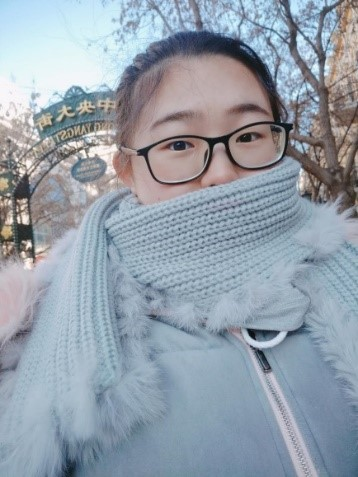
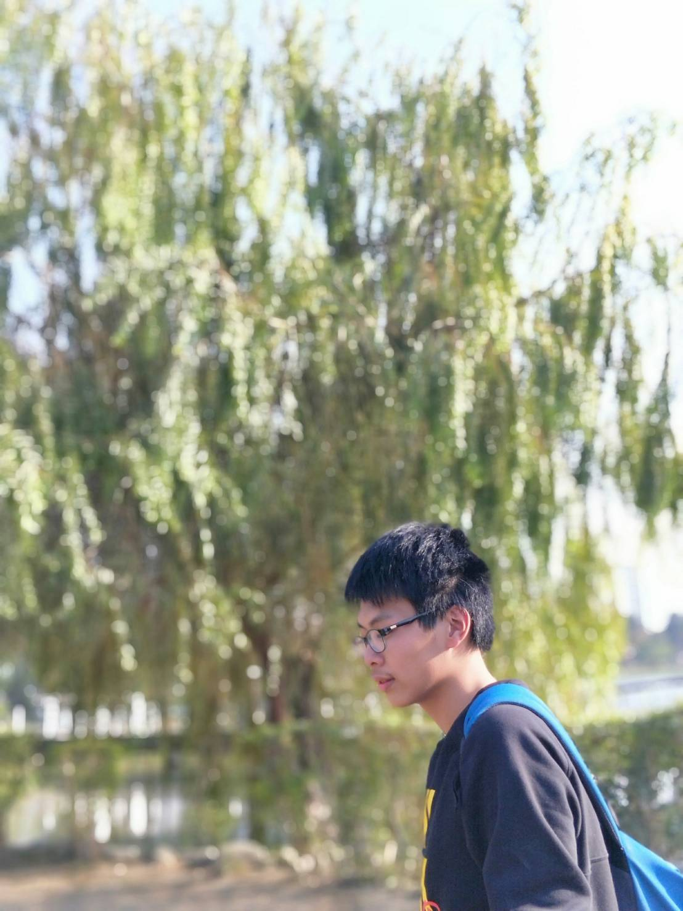
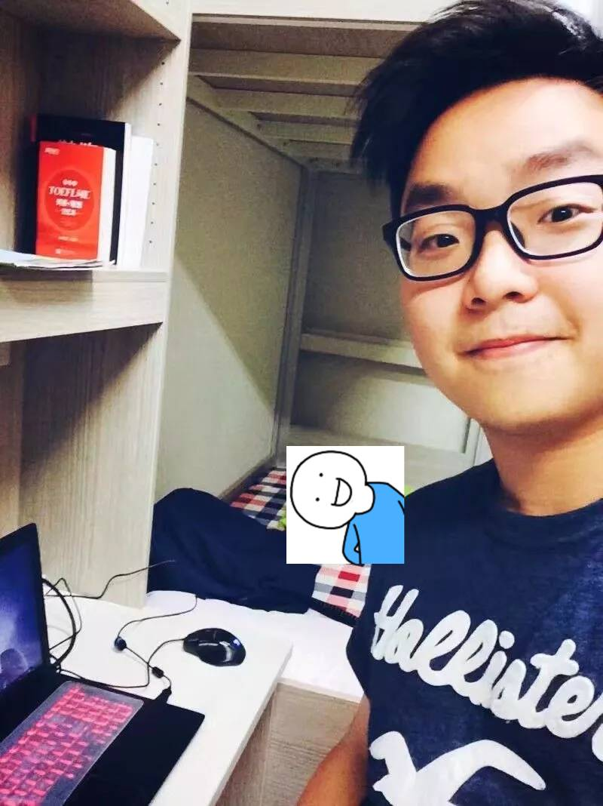

一開始從如何行銷資管開始發想，但要行銷，而不單只是宣傳，但好險組員都很優秀，我們很快完成了初步的工作分配，在大家都很認真配合的情況下，其實整體來說都算很順利。
影片拍攝的過程，也有許多次NG，但也感謝大家的互相容忍及耐心，以及釗懷的劇情及拍攝規劃，讓拍攝影片的過程還算順利，大家也都是樂於此事。而網頁排版中，當然是希望呈現有質感的網頁，但又由於技術知識量等的不足，希望能以簡約，乾淨俐落的呈現出我們想表達的想法。
最主要還是要感謝組員都互相配合，互相幫助，韋綸對寫網頁也十分有熱忱，真的很認真負責，而璇一也是非常熱情，都會提醒大家許多事情，好險有這些優秀的組員，大家都認真負責自己的部分，謝謝各位！
影片拍攝的過程，也有許多次NG，但也感謝大家的互相容忍及耐心，以及釗懷的劇情及拍攝規劃，讓拍攝影片的過程還算順利，大家也都是樂於此事。而網頁排版中，當然是希望呈現有質感的網頁，但又由於技術知識量等的不足，希望能以簡約，乾淨俐落的呈現出我們想表達的想法。
最主要還是要感謝組員都互相配合，互相幫助，韋綸對寫網頁也十分有熱忱，真的很認真負責，而璇一也是非常熱情，都會提醒大家許多事情，好險有這些優秀的組員，大家都認真負責自己的部分，謝謝各位！
10544250陳聖樺
資管三乙 愛好：看動漫、打球
【心得】
關於影片:
這次影片的規定是兩分鐘，時間長度的限制就給我們出了一個很大的難題。如何在極短的時間下行銷資管系?——優秀系友。我們運用優秀學長姐的故事來行銷資管系。但是又不能做太無趣的影片，所以就想到高中生訪問學校，聽說了優秀學長姐的故事，下定決心報考中原資管，從此開始了他與資管的故事。整個流程丁導很讚~一直在思考怎麼拍怎麼呈現，也在認真聽大家的意見，及時修正偏差。
關於網頁:
在網頁的部分，我負責重整網頁架構和網頁資料查找。重整架構和查找資料其實有時候還是有一點問題出現的。比如我們當初設定【教師介紹-1.教師職稱2.教師學歷3.教室成就】，但是在後來的資料查找中，我覺得其實這3點不應該分開，因為都會有重複的部分，所以應該合起來作為教師介紹。還有其他的地方也會有一點小問題，所以，我們要在不斷的查找資料中修正架構，以後要多多注意很多的邏輯架構。
關於期中專案整體:
我覺得大家各司其職配合得井然有序。丁導拍影片很認真負責，韋綸和聖樺網頁做的也很讚，我也在處理雜事，大家各有所長努力配合，團隊的氣氛很舒服，大家都辛苦啦！
這次影片的規定是兩分鐘，時間長度的限制就給我們出了一個很大的難題。如何在極短的時間下行銷資管系?——優秀系友。我們運用優秀學長姐的故事來行銷資管系。但是又不能做太無趣的影片，所以就想到高中生訪問學校，聽說了優秀學長姐的故事，下定決心報考中原資管，從此開始了他與資管的故事。整個流程丁導很讚~一直在思考怎麼拍怎麼呈現，也在認真聽大家的意見，及時修正偏差。
關於網頁:
在網頁的部分，我負責重整網頁架構和網頁資料查找。重整架構和查找資料其實有時候還是有一點問題出現的。比如我們當初設定【教師介紹-1.教師職稱2.教師學歷3.教室成就】，但是在後來的資料查找中，我覺得其實這3點不應該分開，因為都會有重複的部分，所以應該合起來作為教師介紹。還有其他的地方也會有一點小問題，所以，我們要在不斷的查找資料中修正架構，以後要多多注意很多的邏輯架構。
關於期中專案整體:
我覺得大家各司其職配合得井然有序。丁導拍影片很認真負責，韋綸和聖樺網頁做的也很讚，我也在處理雜事，大家各有所長努力配合，團隊的氣氛很舒服，大家都辛苦啦！
10544270王璇一
資管三乙 愛好：看動漫、漫畫
【心得】

這次的多媒期中讓我學習到了許多，尤其是把之前多媒課所學的css都集中應用在這次的作業當中，也是第一次自己從零開始全部都由我們自己做出一個網站，其中的主題、內容、排版、...等，都需要大家一起幫忙、一起去想，要如何做的更好更完美。
再來是影片方面，由丁釗懷主導想了很多劇情，接著其他人再想一些小細節結合出這次的影片，原本拍得覺得很尷尬，但沒想到最後剪出來的影片覺得還不錯，而且還蠻有內容的，不愧是丁導啊，厲害！
這次的組員大家都十分的配合而且都會積極的問說有什麼需要幫忙的，是我大學分組很滿意的組別之一，希望之後有機會繼續合作。
再來是影片方面，由丁釗懷主導想了很多劇情，接著其他人再想一些小細節結合出這次的影片，原本拍得覺得很尷尬，但沒想到最後剪出來的影片覺得還不錯，而且還蠻有內容的，不愧是丁導啊，厲害！
這次的組員大家都十分的配合而且都會積極的問說有什麼需要幫忙的，是我大學分組很滿意的組別之一，希望之後有機會繼續合作。
10644215蘇韋綸
資管三乙 愛好：睡覺
【心得】

期中專案的分組，分工我覺得沒有遇到什麼問題。每位組員都各司其職，王璇一學姐負責文案設計和編劇，以及準備最後的上台報告。陳聖樺學長做網頁範例圖以及網站，蘇韋綸負責網頁的設計，網站的架構以及攝影的工作。我負責剪輯影片和編劇攝影。
我主要講講我負責的影片的部分，在拍攝影片時時間很快就安排好，到了場地拍攝。過程中互相幫忙，提意見，潤色影片，都提出了自己的想法，每個人都很積極，璇一學姐提出的創意完善了整部影片，在調整之前聖樺學長自己負責出演了很多段素材的拍攝，十分辛苦。幾小時的拍攝素材，沒有人有怨言或者嫌累，等待我慢慢找到好的效果進行拍攝，小組有很棒的互動。影片沒拍攝完善的部分，蘇韋綸來我家補拍了最後的幾段，完善影片。
儘管最開始有分工，但有任何一方需要幫助的時候，也能夠得到小組成員的響應，不會單打獨鬥。有團隊合作的感覺，這次的專案希望能讓大眾了解，認識，走進中原資管！
我主要講講我負責的影片的部分，在拍攝影片時時間很快就安排好，到了場地拍攝。過程中互相幫忙，提意見，潤色影片，都提出了自己的想法，每個人都很積極，璇一學姐提出的創意完善了整部影片，在調整之前聖樺學長自己負責出演了很多段素材的拍攝，十分辛苦。幾小時的拍攝素材，沒有人有怨言或者嫌累，等待我慢慢找到好的效果進行拍攝，小組有很棒的互動。影片沒拍攝完善的部分，蘇韋綸來我家補拍了最後的幾段，完善影片。
儘管最開始有分工，但有任何一方需要幫助的時候，也能夠得到小組成員的響應，不會單打獨鬥。有團隊合作的感覺，這次的專案希望能讓大眾了解，認識，走進中原資管！
10644270丁釗懷
資管三乙 愛好：看動漫、nba
【心得】
